class: center, middle, inverse, title-slide # Cloud spotting ## Visual analytics for distributional semantics ### Mariana Montes <br> <small>Supervisors: Dirk Geeraerts, Dirk Speelman & Benedikt Szmrecsanyi</small> ###  ### 19/03/2021 --- <div> <style type="text/css">.xaringan-extra-logo { width: 90px; height: 128px; z-index: 0; background-image: url(icons/cloud-qlvl.png); background-size: contain; background-repeat: no-repeat; position: absolute; top:1em;right:1em; } </style> <script>(function () { let tries = 0 function addLogo () { if (typeof slideshow === 'undefined') { tries += 1 if (tries < 10) { setTimeout(addLogo, 100) } } else { document.querySelectorAll('.remark-slide-content:not(.title-slide):not(.inverse):not(.hide_logo)') .forEach(function (slide) { const logo = document.createElement('a') logo.classList = 'xaringan-extra-logo' logo.href = 'https://www.arts.kuleuven.be/ling/qlvl/projects/current/nephological-semantics' slide.appendChild(logo) }) } } document.addEventListener('DOMContentLoaded', addLogo) })()</script> </div> # Outline - Nephological Semantics project - Vector space models - Case studies - Visualization tool - Preliminary results - Discussion --- # Outline - **Nephological Semantics project** - Vector space models - Case studies - Visualization tool - Preliminary results - Discussion --- # Nephological Semantics .center[C1 project (KU Leuven)] -- ### Current members .pull-left[ - Dirk Geeraerts (PI) - Dirk Speelman - Benedikt Szmrecsanyi - Stefania Marzo ] .pull-left[ - Kris Heylen - Weiwei Zhang - Karlien Franco - Stefano De Pascale - Mariana Montes ] --- # Nephological Semantics project ### Goal Understand and develop tools for distributional semantics - <svg role="img" viewBox="0 0 24 24" style="height:1em;fill:currentColor;position:relative;display:inline-block;top:.1em;" xmlns="http://www.w3.org/2000/svg"> <title></title> <path d="M14.25.18l.9.2.73.26.59.3.45.32.34.34.25.34.16.33.1.3.04.26.02.2-.01.13V8.5l-.05.63-.13.55-.21.46-.26.38-.3.31-.33.25-.35.19-.35.14-.33.1-.3.07-.26.04-.21.02H8.77l-.69.05-.59.14-.5.22-.41.27-.33.32-.27.35-.2.36-.15.37-.1.35-.07.32-.04.27-.02.21v3.06H3.17l-.21-.03-.28-.07-.32-.12-.35-.18-.36-.26-.36-.36-.35-.46-.32-.59-.28-.73-.21-.88-.14-1.05-.05-1.23.06-1.22.16-1.04.24-.87.32-.71.36-.57.4-.44.42-.33.42-.24.4-.16.36-.1.32-.05.24-.01h.16l.06.01h8.16v-.83H6.18l-.01-2.75-.02-.37.05-.34.11-.31.17-.28.25-.26.31-.23.38-.2.44-.18.51-.15.58-.12.64-.1.71-.06.77-.04.84-.02 1.27.05zm-6.3 1.98l-.23.33-.08.41.08.41.23.34.33.22.41.09.41-.09.33-.22.23-.34.08-.41-.08-.41-.23-.33-.33-.22-.41-.09-.41.09zm13.09 3.95l.28.06.32.12.35.18.36.27.36.35.35.47.32.59.28.73.21.88.14 1.04.05 1.23-.06 1.23-.16 1.04-.24.86-.32.71-.36.57-.4.45-.42.33-.42.24-.4.16-.36.09-.32.05-.24.02-.16-.01h-8.22v.82h5.84l.01 2.76.02.36-.05.34-.11.31-.17.29-.25.25-.31.24-.38.2-.44.17-.51.15-.58.13-.64.09-.71.07-.77.04-.84.01-1.27-.04-1.07-.14-.9-.2-.73-.25-.59-.3-.45-.33-.34-.34-.25-.34-.16-.33-.1-.3-.04-.25-.02-.2.01-.13v-5.34l.05-.64.13-.54.21-.46.26-.38.3-.32.33-.24.35-.2.35-.14.33-.1.3-.06.26-.04.21-.02.13-.01h5.84l.69-.05.59-.14.5-.21.41-.28.33-.32.27-.35.2-.36.15-.36.1-.35.07-.32.04-.28.02-.21V6.07h2.09l.14.01zm-6.47 14.25l-.23.33-.08.41.08.41.23.33.33.23.41.08.41-.08.33-.23.23-.33.08-.41-.08-.41-.23-.33-.33-.23-.41-.08-.41.08z"></path></svg> Python module to create count-based token-level vector space models - <svg role="img" viewBox="0 0 24 24" style="height:1em;fill:currentColor;position:relative;display:inline-block;top:.1em;" xmlns="http://www.w3.org/2000/svg"> <title></title> <path d="M13.312 12C13.312 5.718 8.22.625 1.937.625H0v5h1.938c3.521 0 6.375 2.854 6.375 6.375s-2.854 6.375-6.375 6.375H0v5h1.938c6.281 0 11.374-5.093 11.374-11.375zM24 7.563C24 3.731 20.893.625 17.062.625h-8a13.4154 13.4154 0 0 1 4.686 5h3.314c1.069 0 1.938.868 1.938 1.938 0 1.07-.869 1.938-1.938 1.938h-1.938c.313 1.652.313 3.348 0 5h1.938c1.068 0 1.938.867 1.938 1.938s-.869 1.938-1.938 1.938h-3.314a13.4154 13.4154 0 0 1-4.686 5h8c1.621 0 3.191-.568 4.438-1.605 2.943-2.45 3.346-6.824.895-9.77A6.9459 6.9459 0 0 0 24 7.563z"></path></svg> Visualization tool for exploration - Case studies, code and manual to make the most of our data: <svg role="img" viewBox="0 0 24 24" style="height:1em;fill:currentColor;position:relative;display:inline-block;top:.1em;" xmlns="http://www.w3.org/2000/svg"> <title></title> <path d="M14.25.18l.9.2.73.26.59.3.45.32.34.34.25.34.16.33.1.3.04.26.02.2-.01.13V8.5l-.05.63-.13.55-.21.46-.26.38-.3.31-.33.25-.35.19-.35.14-.33.1-.3.07-.26.04-.21.02H8.77l-.69.05-.59.14-.5.22-.41.27-.33.32-.27.35-.2.36-.15.37-.1.35-.07.32-.04.27-.02.21v3.06H3.17l-.21-.03-.28-.07-.32-.12-.35-.18-.36-.26-.36-.36-.35-.46-.32-.59-.28-.73-.21-.88-.14-1.05-.05-1.23.06-1.22.16-1.04.24-.87.32-.71.36-.57.4-.44.42-.33.42-.24.4-.16.36-.1.32-.05.24-.01h.16l.06.01h8.16v-.83H6.18l-.01-2.75-.02-.37.05-.34.11-.31.17-.28.25-.26.31-.23.38-.2.44-.18.51-.15.58-.12.64-.1.71-.06.77-.04.84-.02 1.27.05zm-6.3 1.98l-.23.33-.08.41.08.41.23.34.33.22.41.09.41-.09.33-.22.23-.34.08-.41-.08-.41-.23-.33-.33-.22-.41-.09-.41.09zm13.09 3.95l.28.06.32.12.35.18.36.27.36.35.35.47.32.59.28.73.21.88.14 1.04.05 1.23-.06 1.23-.16 1.04-.24.86-.32.71-.36.57-.4.45-.42.33-.42.24-.4.16-.36.09-.32.05-.24.02-.16-.01h-8.22v.82h5.84l.01 2.76.02.36-.05.34-.11.31-.17.29-.25.25-.31.24-.38.2-.44.17-.51.15-.58.13-.64.09-.71.07-.77.04-.84.01-1.27-.04-1.07-.14-.9-.2-.73-.25-.59-.3-.45-.33-.34-.34-.25-.34-.16-.33-.1-.3-.04-.25-.02-.2.01-.13v-5.34l.05-.64.13-.54.21-.46.26-.38.3-.32.33-.24.35-.2.35-.14.33-.1.3-.06.26-.04.21-.02.13-.01h5.84l.69-.05.59-.14.5-.21.41-.28.33-.32.27-.35.2-.36.15-.36.1-.35.07-.32.04-.28.02-.21V6.07h2.09l.14.01zm-6.47 14.25l-.23.33-.08.41.08.41.23.33.33.23.41.08.41-.08.33-.23.23-.33.08-.41-.08-.41-.23-.33-.33-.23-.41-.08-.41.08z"></path></svg> + <svg role="img" viewBox="0 0 24 24" style="height:1em;fill:currentColor;position:relative;display:inline-block;top:.1em;" xmlns="http://www.w3.org/2000/svg"> <title></title> <path d="M12 18.82c-6.627 0-12-3.598-12-8.037s5.373-8.037 12-8.037 12 3.599 12 8.037-5.373 8.037-12 8.037zm1.837-12.932c-5.038 0-9.121 2.46-9.121 5.495s4.083 5.494 9.12 5.494 8.756-1.682 8.756-5.494-3.718-5.495-8.755-5.495zM18.275 15.194a9.038 9.038 0 0 1 1.149.433 2.221 2.221 0 0 1 .582.416 1.573 1.573 0 0 1 .266.383l2.863 4.826-4.627.002-2.163-4.063a5.229 5.229 0 0 0-.716-.982.753.753 0 0 0-.549-.25h-1.099v5.292l-4.093.001V7.737h8.221s3.744.067 3.744 3.63a3.822 3.822 0 0 1-3.578 3.827zm-1.78-4.526l-2.479-.001v2.298h2.479a1.134 1.134 0 0 0 1.148-1.17 1.07 1.07 0 0 0-1.148-1.127z"></path></svg> + <svg role="img" viewBox="0 0 24 24" style="height:1em;fill:currentColor;position:relative;display:inline-block;top:.1em;" xmlns="http://www.w3.org/2000/svg"> <title></title> <path d="M0 0h24v24H0V0zm22.034 18.276c-.175-1.095-.888-2.015-3.003-2.873-.736-.345-1.554-.585-1.797-1.14-.091-.33-.105-.51-.046-.705.15-.646.915-.84 1.515-.66.39.12.75.42.976.9 1.034-.676 1.034-.676 1.755-1.125-.27-.42-.404-.601-.586-.78-.63-.705-1.469-1.065-2.834-1.034l-.705.089c-.676.165-1.32.525-1.71 1.005-1.14 1.291-.811 3.541.569 4.471 1.365 1.02 3.361 1.244 3.616 2.205.24 1.17-.87 1.545-1.966 1.41-.811-.18-1.26-.586-1.755-1.336l-1.83 1.051c.21.48.45.689.81 1.109 1.74 1.756 6.09 1.666 6.871-1.004.029-.09.24-.705.074-1.65l.046.067zm-8.983-7.245h-2.248c0 1.938-.009 3.864-.009 5.805 0 1.232.063 2.363-.138 2.711-.33.689-1.18.601-1.566.48-.396-.196-.597-.466-.83-.855-.063-.105-.11-.196-.127-.196l-1.825 1.125c.305.63.75 1.172 1.324 1.517.855.51 2.004.675 3.207.405.783-.226 1.458-.691 1.811-1.411.51-.93.402-2.07.397-3.346.012-2.054 0-4.109 0-6.179l.004-.056z"></path></svg> ### Work packages - Lectometry - Onomasiology - **Semasiology** --- # Semasiological work package <!-- .center[(where this PhD is inserted)] --> ### Using distributional semantics to study polysemy - Which models perform best? E.g. *Models that use a window size of 10 and exclude prepositions are the best at disambiguating senses.* - How do the models handle granularity of meaning? E.g. *A good window size is enough to distinguish homonyms, but PMI weighting is necessary to distinguish senses within a homonym.* - ...and more! <!-- --- --> <!-- # Semasiological work package --> <!-- ### <svg viewBox="0 0 192 512" style="height:1em;fill:currentColor;position:relative;display:inline-block;top:.1em;" xmlns="http://www.w3.org/2000/svg"> <path d="M176 432c0 44.112-35.888 80-80 80s-80-35.888-80-80 35.888-80 80-80 80 35.888 80 80zM25.26 25.199l13.6 272C39.499 309.972 50.041 320 62.83 320h66.34c12.789 0 23.331-10.028 23.97-22.801l13.6-272C167.425 11.49 156.496 0 142.77 0H49.23C35.504 0 24.575 11.49 25.26 25.199z"></path></svg> Models don't consistently disambiguate senses --> <!-- -- --> <!-- - How do context words work (what do they say of our target)? --> <!-- - What can we learn from these models? --> <!-- ??? --> <!-- Method as team of Fair Witnesses (in terms of Heinlein's *Stranger in a Strange Land*, 1961) --> <!-- that could show us things we don't think of, going beyond what we expect to find. --> <!-- We do not want to assume there is a golden standard (but what if we do? What if we want it?) --> <!-- -> point out to neural networks!! --> --- # Outline - .gray[Nephological Semantics project] - **Vector space models** - Case studies - Visualization tool - Preliminary results - Discussion --- name: vsm-intro # What are vector space models? **word vectors** → numerical representations of words <table> <thead> <tr> <th style="text-align:left;"> target </th> <th style="text-align:right;"> language/n </th> <th style="text-align:right;"> word/n </th> <th style="text-align:right;"> english/j </th> <th style="text-align:right;"> speak/v </th> <th style="text-align:right;"> flemish/j </th> <th style="text-align:right;"> eat/v </th> </tr> </thead> <tbody> <tr> <td style="text-align:left;"> linguistics/n </td> <td style="text-align:right;"> 4.37 </td> <td style="text-align:right;"> 0.99 </td> <td style="text-align:right;"> 3.16 </td> <td style="text-align:right;"> 0.41 </td> <td style="text-align:right;"> NA </td> <td style="text-align:right;"> NA </td> </tr> </tbody> </table> -- <br> `$$PMI_{(linguistics, language)} = \log\frac{p(linguistics, language)}{p(linguistics)p(language)}$$` .footnote[<svg viewBox="0 0 512 512" style="height:1em;fill:currentColor;position:relative;display:inline-block;top:.1em;" xmlns="http://www.w3.org/2000/svg"> <path d="M256 8C119.043 8 8 119.083 8 256c0 136.997 111.043 248 248 248s248-111.003 248-248C504 119.083 392.957 8 256 8zm0 110c23.196 0 42 18.804 42 42s-18.804 42-42 42-42-18.804-42-42 18.804-42 42-42zm56 254c0 6.627-5.373 12-12 12h-88c-6.627 0-12-5.373-12-12v-24c0-6.627 5.373-12 12-12h12v-64h-12c-6.627 0-12-5.373-12-12v-24c0-6.627 5.373-12 12-12h64c6.627 0 12 5.373 12 12v100h12c6.627 0 12 5.373 12 12v24z"></path></svg> Actual values from GloWbE (Global Web-based English corpus).] --- template: vsm-intro <br> `$$PMI_{(linguistics, language)} = \log\frac{\frac{285}{N}}{p(linguistics)p(language)}$$` --- template: vsm-intro <br> `$$PMI_{(linguistics, language)} = \log\frac{\frac{285}{N}}{\frac{20,740}{N}\frac{1.58 \times 10^6}{N}}$$` --- template: vsm-intro <br> `$$PMI_{(linguistics, language)} = \log\frac{285}{20,740\times 1.58 \times 10^6} N$$` --- template: vsm-intro <br> `$$PMI_{(linguistics, language)} = \log\frac{285}{20,740\times 1.58 \times 10^6} 9.14 \times 10^8$$` --- template: vsm-intro <br> `$$PMI_{(linguistics, language)} = \log\frac{285}{20,740\times 1.58 \times 10^6} 9.14 \times 10^8 = 4.37$$` --- # Type level vectors - Each row is the vector of a word - aggregating over **all** its occurrences - Each column is a context feature <table> <thead> <tr> <th style="text-align:left;"> target </th> <th style="text-align:right;"> language/n </th> <th style="text-align:right;"> word/n </th> <th style="text-align:right;"> english/j </th> <th style="text-align:right;"> speak/v </th> <th style="text-align:right;"> flemish/j </th> <th style="text-align:right;"> eat/v </th> </tr> </thead> <tbody> <tr> <td style="text-align:left;"> linguistics/n </td> <td style="text-align:right;"> 4.37 </td> <td style="text-align:right;"> 0.99 </td> <td style="text-align:right;"> 3.16 </td> <td style="text-align:right;"> 0.41 </td> <td style="text-align:right;"> NA </td> <td style="text-align:right;"> NA </td> </tr> <tr> <td style="text-align:left;"> lexicography/n </td> <td style="text-align:right;"> 3.51 </td> <td style="text-align:right;"> 2.18 </td> <td style="text-align:right;"> 2.19 </td> <td style="text-align:right;"> 2.09 </td> <td style="text-align:right;"> NA </td> <td style="text-align:right;"> NA </td> </tr> <tr> <td style="text-align:left;"> computational/j </td> <td style="text-align:right;"> 1.60 </td> <td style="text-align:right;"> 0.08 </td> <td style="text-align:right;"> -1.00 </td> <td style="text-align:right;"> -1.80 </td> <td style="text-align:right;"> NA </td> <td style="text-align:right;"> NA </td> </tr> <tr> <td style="text-align:left;"> research/n </td> <td style="text-align:right;"> 0.20 </td> <td style="text-align:right;"> -0.84 </td> <td style="text-align:right;"> -0.50 </td> <td style="text-align:right;"> -0.38 </td> <td style="text-align:right;"> 0.04 </td> <td style="text-align:right;"> -0.68 </td> </tr> <tr> <td style="text-align:left;"> chocolate/n </td> <td style="text-align:right;"> -1.72 </td> <td style="text-align:right;"> -0.53 </td> <td style="text-align:right;"> -0.73 </td> <td style="text-align:right;"> -1.13 </td> <td style="text-align:right;"> 1.28 </td> <td style="text-align:right;"> 3.08 </td> </tr> </tbody> </table> --- name: study-tokens # Token level vectors ### Tokens of *to study* (1) Would you like to **study** linguistics? (2) They **study** this in computational linguistics too. (3) I eat chocolate while I **study**. <hr> -- .center[(1) Would you like to **study** *linguistics*?] <table> <thead> <tr> <th style="text-align:left;"> context feature </th> <th style="text-align:right;"> language/n </th> <th style="text-align:right;"> word/n </th> <th style="text-align:right;"> english/j </th> <th style="text-align:right;"> speak/v </th> <th style="text-align:right;"> flemish/j </th> <th style="text-align:right;"> eat/v </th> </tr> </thead> <tbody> <tr> <td style="text-align:left;"> linguistics/n </td> <td style="text-align:right;"> 4.37 </td> <td style="text-align:right;"> 0.99 </td> <td style="text-align:right;"> 3.16 </td> <td style="text-align:right;"> 0.41 </td> <td style="text-align:right;"> NA </td> <td style="text-align:right;"> NA </td> </tr> </tbody> </table> --- template: study-tokens .center[(2) They **study** this in *computational linguistics* too.] <table> <thead> <tr> <th style="text-align:left;"> context feature </th> <th style="text-align:right;"> language/n </th> <th style="text-align:right;"> word/n </th> <th style="text-align:right;"> english/j </th> <th style="text-align:right;"> speak/v </th> <th style="text-align:right;"> flemish/j </th> <th style="text-align:right;"> eat/v </th> </tr> </thead> <tbody> <tr> <td style="text-align:left;"> linguistics/n </td> <td style="text-align:right;"> 4.37 </td> <td style="text-align:right;"> 0.99 </td> <td style="text-align:right;"> 3.16 </td> <td style="text-align:right;"> 0.41 </td> <td style="text-align:right;"> NA </td> <td style="text-align:right;"> NA </td> </tr> <tr> <td style="text-align:left;"> computational/j </td> <td style="text-align:right;"> 1.60 </td> <td style="text-align:right;"> 0.08 </td> <td style="text-align:right;"> -1.00 </td> <td style="text-align:right;"> -1.80 </td> <td style="text-align:right;"> NA </td> <td style="text-align:right;"> NA </td> </tr> </tbody> </table> --- ### Merging vectors .center[(2) They **study** this in *computational linguistics* too.] <table> <thead> <tr> <th style="text-align:left;"> context feature </th> <th style="text-align:right;"> language/n </th> <th style="text-align:right;"> word/n </th> <th style="text-align:right;"> english/j </th> <th style="text-align:right;"> speak/v </th> <th style="text-align:right;"> flemish/j </th> <th style="text-align:right;"> eat/v </th> </tr> </thead> <tbody> <tr> <td style="text-align:left;"> linguistics/n </td> <td style="text-align:right;"> 4.37 </td> <td style="text-align:right;"> 0.99 </td> <td style="text-align:right;"> 3.16 </td> <td style="text-align:right;"> 0.41 </td> <td style="text-align:right;"> NA </td> <td style="text-align:right;"> NA </td> </tr> <tr> <td style="text-align:left;"> computational/j </td> <td style="text-align:right;"> 1.60 </td> <td style="text-align:right;"> 0.08 </td> <td style="text-align:right;"> -1.00 </td> <td style="text-align:right;"> -1.80 </td> <td style="text-align:right;"> NA </td> <td style="text-align:right;"> NA </td> </tr> </tbody> </table> -- <br> .center[ <svg viewBox="0 0 320 512" style="height:1em;position:relative;display:inline-block;top:.1em;fill:#03763d;" xmlns="http://www.w3.org/2000/svg"> <path d="M143 256.3L7 120.3c-9.4-9.4-9.4-24.6 0-33.9l22.6-22.6c9.4-9.4 24.6-9.4 33.9 0l96.4 96.4 96.4-96.4c9.4-9.4 24.6-9.4 33.9 0L313 86.3c9.4 9.4 9.4 24.6 0 33.9l-136 136c-9.4 9.5-24.6 9.5-34 .1zm34 192l136-136c9.4-9.4 9.4-24.6 0-33.9l-22.6-22.6c-9.4-9.4-24.6-9.4-33.9 0L160 352.1l-96.4-96.4c-9.4-9.4-24.6-9.4-33.9 0L7 278.3c-9.4 9.4-9.4 24.6 0 33.9l136 136c9.4 9.5 24.6 9.5 34 .1z"></path></svg> <svg viewBox="0 0 320 512" style="height:1em;position:relative;display:inline-block;top:.1em;fill:#03763d;" xmlns="http://www.w3.org/2000/svg"> <path d="M143 256.3L7 120.3c-9.4-9.4-9.4-24.6 0-33.9l22.6-22.6c9.4-9.4 24.6-9.4 33.9 0l96.4 96.4 96.4-96.4c9.4-9.4 24.6-9.4 33.9 0L313 86.3c9.4 9.4 9.4 24.6 0 33.9l-136 136c-9.4 9.5-24.6 9.5-34 .1zm34 192l136-136c9.4-9.4 9.4-24.6 0-33.9l-22.6-22.6c-9.4-9.4-24.6-9.4-33.9 0L160 352.1l-96.4-96.4c-9.4-9.4-24.6-9.4-33.9 0L7 278.3c-9.4 9.4-9.4 24.6 0 33.9l136 136c9.4 9.5 24.6 9.5 34 .1z"></path></svg> <svg viewBox="0 0 320 512" style="height:1em;position:relative;display:inline-block;top:.1em;fill:#03763d;" xmlns="http://www.w3.org/2000/svg"> <path d="M143 256.3L7 120.3c-9.4-9.4-9.4-24.6 0-33.9l22.6-22.6c9.4-9.4 24.6-9.4 33.9 0l96.4 96.4 96.4-96.4c9.4-9.4 24.6-9.4 33.9 0L313 86.3c9.4 9.4 9.4 24.6 0 33.9l-136 136c-9.4 9.5-24.6 9.5-34 .1zm34 192l136-136c9.4-9.4 9.4-24.6 0-33.9l-22.6-22.6c-9.4-9.4-24.6-9.4-33.9 0L160 352.1l-96.4-96.4c-9.4-9.4-24.6-9.4-33.9 0L7 278.3c-9.4 9.4-9.4 24.6 0 33.9l136 136c9.4 9.5 24.6 9.5 34 .1z"></path></svg> <svg viewBox="0 0 320 512" style="height:1em;position:relative;display:inline-block;top:.1em;fill:#03763d;" xmlns="http://www.w3.org/2000/svg"> <path d="M143 256.3L7 120.3c-9.4-9.4-9.4-24.6 0-33.9l22.6-22.6c9.4-9.4 24.6-9.4 33.9 0l96.4 96.4 96.4-96.4c9.4-9.4 24.6-9.4 33.9 0L313 86.3c9.4 9.4 9.4 24.6 0 33.9l-136 136c-9.4 9.5-24.6 9.5-34 .1zm34 192l136-136c9.4-9.4 9.4-24.6 0-33.9l-22.6-22.6c-9.4-9.4-24.6-9.4-33.9 0L160 352.1l-96.4-96.4c-9.4-9.4-24.6-9.4-33.9 0L7 278.3c-9.4 9.4-9.4 24.6 0 33.9l136 136c9.4 9.5 24.6 9.5 34 .1z"></path></svg> <svg viewBox="0 0 320 512" style="height:1em;position:relative;display:inline-block;top:.1em;fill:#03763d;" xmlns="http://www.w3.org/2000/svg"> <path d="M143 256.3L7 120.3c-9.4-9.4-9.4-24.6 0-33.9l22.6-22.6c9.4-9.4 24.6-9.4 33.9 0l96.4 96.4 96.4-96.4c9.4-9.4 24.6-9.4 33.9 0L313 86.3c9.4 9.4 9.4 24.6 0 33.9l-136 136c-9.4 9.5-24.6 9.5-34 .1zm34 192l136-136c9.4-9.4 9.4-24.6 0-33.9l-22.6-22.6c-9.4-9.4-24.6-9.4-33.9 0L160 352.1l-96.4-96.4c-9.4-9.4-24.6-9.4-33.9 0L7 278.3c-9.4 9.4-9.4 24.6 0 33.9l136 136c9.4 9.5 24.6 9.5 34 .1z"></path></svg> ] <br> <table> <thead> <tr> <th style="text-align:left;"> target </th> <th style="text-align:right;"> language/n </th> <th style="text-align:right;"> word/n </th> <th style="text-align:right;"> english/j </th> <th style="text-align:right;"> speak/v </th> <th style="text-align:right;"> flemish/j </th> <th style="text-align:right;"> eat/v </th> </tr> </thead> <tbody> <tr> <td style="text-align:left;"> study<sub>2</sub> </td> <td style="text-align:right;"> 5.97 </td> <td style="text-align:right;"> 1.07 </td> <td style="text-align:right;"> 2.16 </td> <td style="text-align:right;"> -1.39 </td> <td style="text-align:right;"> NA </td> <td style="text-align:right;"> NA </td> </tr> </tbody> </table> --- ### Token level vectors .center[ .bb.b--orange.ph3[.orange[(1)] Would you like to **study** *linguistics*?] .bb.b--blue.ph3[.blue[(2)] They **study** this in *computational linguistics* too.] .bb.b--green.ph3[.green[(3)] I eat *chocolate* while I **study**.] ] <br> .center[ <table> <thead> <tr> <th style="text-align:left;"> target </th> <th style="text-align:right;"> language/n </th> <th style="text-align:right;"> word/n </th> <th style="text-align:right;"> english/j </th> <th style="text-align:right;"> speak/v </th> <th style="text-align:right;"> flemish/j </th> <th style="text-align:right;"> eat/v </th> </tr> </thead> <tbody> <tr> <td style="text-align:left;font-weight: bold;color: #E69F00 !important;"> study<sub>1</sub> </td> <td style="text-align:right;"> 4.37 </td> <td style="text-align:right;"> 0.99 </td> <td style="text-align:right;"> 3.16 </td> <td style="text-align:right;"> 0.41 </td> <td style="text-align:right;"> NA </td> <td style="text-align:right;"> NA </td> </tr> <tr> <td style="text-align:left;font-weight: bold;color: #56B4E9 !important;"> study<sub>2</sub> </td> <td style="text-align:right;"> 5.97 </td> <td style="text-align:right;"> 1.07 </td> <td style="text-align:right;"> 2.16 </td> <td style="text-align:right;"> -1.39 </td> <td style="text-align:right;"> NA </td> <td style="text-align:right;"> NA </td> </tr> <tr> <td style="text-align:left;font-weight: bold;color: #009E73 !important;"> study<sub>3</sub> </td> <td style="text-align:right;"> -1.72 </td> <td style="text-align:right;"> -0.53 </td> <td style="text-align:right;"> -0.73 </td> <td style="text-align:right;"> -1.13 </td> <td style="text-align:right;"> 1.28 </td> <td style="text-align:right;"> 3.08 </td> </tr> </tbody> </table> ] --- .pull-left[ #### Original text .gold[(1)] Would you like to **study** *linguistics*? .blue[(2)] They **study** this in *computational linguistics* too. .green[(3)] I eat *chocolate* while I **study**. ] .pull-right[ #### Token-context matrix <table class="table" style="font-size: 11px; margin-left: auto; margin-right: auto;"> <thead> <tr> <th style="text-align:left;"> target </th> <th style="text-align:right;"> language/n </th> <th style="text-align:right;"> word/n </th> <th style="text-align:right;"> english/j </th> <th style="text-align:right;"> speak/v </th> <th style="text-align:right;"> flemish/j </th> <th style="text-align:right;"> eat/v </th> </tr> </thead> <tbody> <tr> <td style="text-align:left;font-weight: bold;color: #E69F00 !important;"> study<sub>1</sub> </td> <td style="text-align:right;"> 4.37 </td> <td style="text-align:right;"> 0.99 </td> <td style="text-align:right;"> 3.16 </td> <td style="text-align:right;"> 0.41 </td> <td style="text-align:right;"> NA </td> <td style="text-align:right;"> NA </td> </tr> <tr> <td style="text-align:left;font-weight: bold;color: #56B4E9 !important;"> study<sub>2</sub> </td> <td style="text-align:right;"> 5.97 </td> <td style="text-align:right;"> 1.07 </td> <td style="text-align:right;"> 2.16 </td> <td style="text-align:right;"> -1.39 </td> <td style="text-align:right;"> NA </td> <td style="text-align:right;"> NA </td> </tr> <tr> <td style="text-align:left;font-weight: bold;color: #009E73 !important;"> study<sub>3</sub> </td> <td style="text-align:right;"> -1.72 </td> <td style="text-align:right;"> -0.53 </td> <td style="text-align:right;"> -0.73 </td> <td style="text-align:right;"> -1.13 </td> <td style="text-align:right;"> 1.28 </td> <td style="text-align:right;"> 3.08 </td> </tr> </tbody> </table> ] -- .pull-left[ #### Token-token distance matrix <table> <thead> <tr> <th style="text-align:left;"> target </th> <th style="text-align:left;"> study<sub>1</sub> </th> <th style="text-align:left;"> study<sub>2</sub> </th> <th style="text-align:left;"> study<sub>3</sub> </th> </tr> </thead> <tbody> <tr> <td style="text-align:left;font-weight: bold;color: #E69F00 !important;"> study<sub>1</sub> </td> <td style="text-align:left;"> <span style=" color: grey !important;">0</span> </td> <td style="text-align:left;"> <span style=" color: black !important;">0.04</span> </td> <td style="text-align:left;"> <span style=" color: black !important;">1</span> </td> </tr> <tr> <td style="text-align:left;font-weight: bold;color: #56B4E9 !important;"> study<sub>2</sub> </td> <td style="text-align:left;"> <span style=" color: black !important;">0.04</span> </td> <td style="text-align:left;"> <span style=" color: grey !important;">0</span> </td> <td style="text-align:left;"> <span style=" color: black !important;">1</span> </td> </tr> <tr> <td style="text-align:left;font-weight: bold;color: #009E73 !important;"> study<sub>3</sub> </td> <td style="text-align:left;"> <span style=" color: black !important;">1</span> </td> <td style="text-align:left;"> <span style=" color: black !important;">1</span> </td> <td style="text-align:left;"> <span style=" color: grey !important;">0</span> </td> </tr> </tbody> </table> ] -- .pull-right[ #### t-SNE visualization .halfsize[  ] ] --- class: center # In short .ba.br3.bw1.shadow-3.b--dark-green.bg-washed-green[ We represent a word .small[(one occurrence, or all the occurrences)] with its (textual) context. ] -- # BUT ### How do you define the "context"? --- class: center # Parameter settings .pull-left[ ### First order <svg viewBox="0 0 512 512" style="height:1em;fill:currentColor;position:relative;display:inline-block;top:.1em;" xmlns="http://www.w3.org/2000/svg"> <path d="M256 8C119 8 8 119 8 256s111 248 248 248 248-111 248-248S393 8 256 8zm0 448c-110.5 0-200-89.5-200-200S145.5 56 256 56s200 89.5 200 200-89.5 200-200 200zm-32-316v116h-67c-10.7 0-16 12.9-8.5 20.5l99 99c4.7 4.7 12.3 4.7 17 0l99-99c7.6-7.6 2.2-20.5-8.5-20.5h-67V140c0-6.6-5.4-12-12-12h-40c-6.6 0-12 5.4-12 12z"></path></svg> The context of each token .panelset[ .panel[.panel-name[i] Would you like to **study** *linguistics*? It's so cool! ] .panel[.panel-name[ii] Would you *like* to **study** *linguistics*? It's so *cool*! ] .panel[.panel-name[iii] *Would* you *like* to **study** linguistics? It'*s* so cool! ] .panel[.panel-name[iv] *Would you like to* **study** *linguistics*? It's so cool! ] .panel[.panel-name[...] ~~Would you like to **study** linguistics? It's so cool!~~ ] ] ] -- .pull-right[ ### Second order <svg viewBox="0 0 512 512" style="height:1em;fill:currentColor;position:relative;display:inline-block;top:.1em;" xmlns="http://www.w3.org/2000/svg"> <path d="M256 8C119 8 8 119 8 256s111 248 248 248 248-111 248-248S393 8 256 8zm0 448c-110.5 0-200-89.5-200-200S145.5 56 256 56s200 89.5 200 200-89.5 200-200 200zm-32-316v116h-67c-10.7 0-16 12.9-8.5 20.5l99 99c4.7 4.7 12.3 4.7 17 0l99-99c7.6-7.6 2.2-20.5-8.5-20.5h-67V140c0-6.6-5.4-12-12-12h-40c-6.6 0-12 5.4-12 12z"></path></svg> The context of the context .panelset[ .panel[.panel-name[i] *PMI window: 10; all words* <table class="table" style="font-size: 9px; margin-left: auto; margin-right: auto;"> <thead> <tr> <th style="text-align:left;"> target </th> <th style="text-align:right;"> language/n </th> <th style="text-align:right;"> word/n </th> <th style="text-align:right;"> english/j </th> <th style="text-align:right;"> speak/v </th> <th style="text-align:right;"> flemish/j </th> <th style="text-align:right;"> eat/v </th> </tr> </thead> <tbody> <tr> <td style="text-align:left;"> linguistics/n </td> <td style="text-align:right;"> 4.37 </td> <td style="text-align:right;"> 0.99 </td> <td style="text-align:right;"> 3.16 </td> <td style="text-align:right;"> 0.41 </td> <td style="text-align:right;"> NA </td> <td style="text-align:right;"> NA </td> </tr> <tr> <td style="text-align:left;"> lexicography/n </td> <td style="text-align:right;"> 3.51 </td> <td style="text-align:right;"> 2.18 </td> <td style="text-align:right;"> 2.19 </td> <td style="text-align:right;"> 2.09 </td> <td style="text-align:right;"> NA </td> <td style="text-align:right;"> NA </td> </tr> <tr> <td style="text-align:left;"> computational/j </td> <td style="text-align:right;"> 1.60 </td> <td style="text-align:right;"> 0.08 </td> <td style="text-align:right;"> -1.00 </td> <td style="text-align:right;"> -1.80 </td> <td style="text-align:right;"> NA </td> <td style="text-align:right;"> NA </td> </tr> <tr> <td style="text-align:left;"> research/n </td> <td style="text-align:right;"> 0.20 </td> <td style="text-align:right;"> -0.84 </td> <td style="text-align:right;"> -0.50 </td> <td style="text-align:right;"> -0.38 </td> <td style="text-align:right;"> 0.04 </td> <td style="text-align:right;"> -0.68 </td> </tr> <tr> <td style="text-align:left;"> chocolate/n </td> <td style="text-align:right;"> -1.72 </td> <td style="text-align:right;"> -0.53 </td> <td style="text-align:right;"> -0.73 </td> <td style="text-align:right;"> -1.13 </td> <td style="text-align:right;"> 1.28 </td> <td style="text-align:right;"> 3.08 </td> </tr> </tbody> </table> ] .panel[.panel-name[ii] *PMI window: 10; no adjectives* <table class="table" style="font-size: 9px; margin-left: auto; margin-right: auto;"> <thead> <tr> <th style="text-align:left;"> target </th> <th style="text-align:right;"> language/n </th> <th style="text-align:right;"> word/n </th> <th style="text-align:right;"> speak/v </th> <th style="text-align:right;"> eat/v </th> </tr> </thead> <tbody> <tr> <td style="text-align:left;"> linguistics/n </td> <td style="text-align:right;"> 4.37 </td> <td style="text-align:right;"> 0.99 </td> <td style="text-align:right;"> 0.41 </td> <td style="text-align:right;"> NA </td> </tr> <tr> <td style="text-align:left;"> lexicography/n </td> <td style="text-align:right;"> 3.51 </td> <td style="text-align:right;"> 2.18 </td> <td style="text-align:right;"> 2.09 </td> <td style="text-align:right;"> NA </td> </tr> <tr> <td style="text-align:left;"> computational/j </td> <td style="text-align:right;"> 1.60 </td> <td style="text-align:right;"> 0.08 </td> <td style="text-align:right;"> -1.80 </td> <td style="text-align:right;"> NA </td> </tr> <tr> <td style="text-align:left;"> research/n </td> <td style="text-align:right;"> 0.20 </td> <td style="text-align:right;"> -0.84 </td> <td style="text-align:right;"> -0.38 </td> <td style="text-align:right;"> -0.68 </td> </tr> <tr> <td style="text-align:left;"> chocolate/n </td> <td style="text-align:right;"> -1.72 </td> <td style="text-align:right;"> -0.53 </td> <td style="text-align:right;"> -1.13 </td> <td style="text-align:right;"> 3.08 </td> </tr> </tbody> </table> ] .panel[.panel-name[iii] *PMI window: 4; all words* <table class="table" style="font-size: 9px; margin-left: auto; margin-right: auto;"> <thead> <tr> <th style="text-align:left;"> target </th> <th style="text-align:right;"> language/n </th> <th style="text-align:right;"> word/n </th> <th style="text-align:right;"> english/j </th> <th style="text-align:right;"> speak/v </th> <th style="text-align:right;"> flemish/j </th> <th style="text-align:right;"> eat/v </th> </tr> </thead> <tbody> <tr> <td style="text-align:left;"> linguistics/n </td> <td style="text-align:right;"> 4.52 </td> <td style="text-align:right;"> 0.20 </td> <td style="text-align:right;"> 3.74 </td> <td style="text-align:right;"> 0.23 </td> <td style="text-align:right;"> NA </td> <td style="text-align:right;"> NA </td> </tr> <tr> <td style="text-align:left;"> lexicography/n </td> <td style="text-align:right;"> 3.51 </td> <td style="text-align:right;"> 2.00 </td> <td style="text-align:right;"> 3.11 </td> <td style="text-align:right;"> 3.01 </td> <td style="text-align:right;"> NA </td> <td style="text-align:right;"> NA </td> </tr> <tr> <td style="text-align:left;"> computational/j </td> <td style="text-align:right;"> 1.57 </td> <td style="text-align:right;"> -0.50 </td> <td style="text-align:right;"> NA </td> <td style="text-align:right;"> NA </td> <td style="text-align:right;"> NA </td> <td style="text-align:right;"> NA </td> </tr> <tr> <td style="text-align:left;"> research/n </td> <td style="text-align:right;"> 0.00 </td> <td style="text-align:right;"> -1.26 </td> <td style="text-align:right;"> -0.73 </td> <td style="text-align:right;"> -0.53 </td> <td style="text-align:right;"> 0.56 </td> <td style="text-align:right;"> -1.16 </td> </tr> <tr> <td style="text-align:left;"> chocolate/n </td> <td style="text-align:right;"> NA </td> <td style="text-align:right;"> -1.14 </td> <td style="text-align:right;"> -1.20 </td> <td style="text-align:right;"> -1.44 </td> <td style="text-align:right;"> NA </td> <td style="text-align:right;"> 3.42 </td> </tr> </tbody> </table> ] .panel[.panel-name[iv] *PMI window:10; same columns as rows* <table class="table" style="font-size: 9px; margin-left: auto; margin-right: auto;"> <thead> <tr> <th style="text-align:left;"> target </th> <th style="text-align:right;"> linguistics/n </th> <th style="text-align:right;"> computational/j </th> <th style="text-align:right;"> research/n </th> <th style="text-align:right;"> chocolate/n </th> </tr> </thead> <tbody> <tr> <td style="text-align:left;"> linguistics/n </td> <td style="text-align:right;"> 7.74 </td> <td style="text-align:right;"> 6.92 </td> <td style="text-align:right;"> 2.11 </td> <td style="text-align:right;"> NA </td> </tr> <tr> <td style="text-align:left;"> computational/j </td> <td style="text-align:right;"> 6.92 </td> <td style="text-align:right;"> 7.02 </td> <td style="text-align:right;"> 2.42 </td> <td style="text-align:right;"> NA </td> </tr> <tr> <td style="text-align:left;"> research/n </td> <td style="text-align:right;"> 2.11 </td> <td style="text-align:right;"> 2.42 </td> <td style="text-align:right;"> 3.07 </td> <td style="text-align:right;"> -0.43 </td> </tr> <tr> <td style="text-align:left;"> chocolate/n </td> <td style="text-align:right;"> NA </td> <td style="text-align:right;"> NA </td> <td style="text-align:right;"> -0.43 </td> <td style="text-align:right;"> 5.79 </td> </tr> </tbody> </table> ] ] ] --- class: center .pull-left[ ### First order <div id="htmlwidget-9c15f19a4d9e5baf9f99" style="width:504px;height:504px;" class="grViz html-widget"></div> <script type="application/json" data-for="htmlwidget-9c15f19a4d9e5baf9f99">{"x":{"diagram":"digraph {\n \n graph [layout = dot]\n \n node [\n shape = rectangle,\n color = darkgreen,\n fontname = Helvetica\n ]\n \n a [label = \"Syntactic information?\"]\n b [label = \"Window size?\"]\n b2 [label = \"Part of speech filter?\"]\n c [label = \"How far in the tree?\"]\n c2 [label = \"Which kind of pattern?\"]\n d [label = \"Filter by association strength?\"]\n \n edge [\n color = darkgreen,\n fontname = Helvetica\n ]\n a -> b [label = \"no\"]\n b -> b2\n a -> c [label = \"yes\"]\n c -> c2 [arrowhead = none, label = \"or\"]\n b2 -> d\n c2 -> d\n}","config":{"engine":"dot","options":null}},"evals":[],"jsHooks":[]}</script> ] -- .pull-right[ ### Second order <div id="htmlwidget-db2a403f319d46a2c6fc" style="width:504px;height:504px;" class="grViz html-widget"></div> <script type="application/json" data-for="htmlwidget-db2a403f319d46a2c6fc">{"x":{"diagram":"digraph {\n \n graph [layout = dot]\n \n node [\n shape = rectangle,\n color = darkgreen,\n fontname = Helvetica\n ]\n \n d [\n label = \"First order filters\",\n shape = plaintext\n ]\n e [label = \"Weight vectors?\"]\n f [label = \"Filter by part-of-speech?\"]\n g [label = \"How many dimensions?\"]\n h [label = \"...\"]\n \n edge [\n color = darkgreen,\n fontname = Helvetica\n ]\n d -> e\n e -> f\n f -> g\n g -> h\n \n}","config":{"engine":"dot","options":null}},"evals":[],"jsHooks":[]}</script> ] --- # Outline - .gray[Nephological Semantics project] - .gray[Vector space models] - **Case studies** - Visualization tool - Preliminary results - Discussion --- ## 32 Dutch nouns, verbs and adjectives <br> <table> <thead><tr> <th style="border-bottom:hidden;padding-bottom:0; padding-left:3px;padding-right:3px;text-align: center; " colspan="1"><div style="border-bottom: 1px solid #ddd; padding-bottom: 5px; ">7 nouns</div></th> <th style="border-bottom:hidden;padding-bottom:0; padding-left:3px;padding-right:3px;text-align: center; " colspan="2"><div style="border-bottom: 1px solid #ddd; padding-bottom: 5px; ">12 verbs</div></th> <th style="border-bottom:hidden;padding-bottom:0; padding-left:3px;padding-right:3px;text-align: center; " colspan="2"><div style="border-bottom: 1px solid #ddd; padding-bottom: 5px; ">13 adjectives</div></th> </tr></thead> <tbody> <tr> <td style="text-align:left;"> blik<br>hoop<br>horde<br>schaal<br>spot<br>staal<br>stof </td> <td style="text-align:left;"> diskwalificeren<br>haken<br>harden<br>haten<br>heffen<br>helpen </td> <td style="text-align:left;"> herhalen<br>herinneren<br>herroepen<br>herstellen<br>herstructureren<br>huldigen </td> <td style="text-align:left;"> dof<br>geestig<br>gekleurd<br>geldig<br>gemeen<br>goedkoop<br>grijs </td> <td style="text-align:left;"> hachelijk<br>heet<br>heilzaam<br>hemels<br>hoekig<br>hoopvol </td> </tr> </tbody> </table> --- # Semantic annotation 1. Assign a sense from a simplified set 1. If no sense could be assigned, explain why 1. Indicate which context words helped the decision .halfsize.shadow-5.center [  ] --- # Outline - .gray[Nephological Semantics project] - .gray[Vector space models] - .gray[Case studies] - **Visualization tool** - Preliminary results - Discussion --- # Visualization tool - Written in Javascript with [<svg viewBox="0 0 90.313 85" fill="#fff" fill-rule="evenodd" stroke="#000" stroke-linecap="round" stroke-linejoin="round" style="height:1em;fill:currentColor;position:relative;display:inline-block;top:.1em;" xmlns="http://www.w3.org/2000/svg" xmlns:xlink="http://www.w3.org/1999/xlink"> <use href="#D" x="2.656" y="2.5"></use> <defs> <linearGradient id="A" x1="0%" y1="0%" x2="100%" y2="100%"> <stop offset="0%" stop-color="#f9a03c"></stop> <stop offset="100%" stop-color="#f7974e"></stop> </linearGradient> <linearGradient id="B" x1="0%" y1="0%" x2="100%" y2="100%"> <stop offset="0%" stop-color="#b84e51"></stop> <stop offset="100%" stop-color="#f68e48"></stop> </linearGradient> <linearGradient id="C" x1="0%" y1="0%" x2="100%" y2="100%"> <stop offset="0%" stop-color="#f26d58"></stop> <stop offset="100%" stop-color="#f9a03c"></stop> </linearGradient> </defs> <symbol id="D" overflow="visible"> <g stroke="none"> <path d="M27.111 49.156l13.133 13.047C33.04 72.947 20.735 80 6.711 80H0V62.222h6.711c9.103 0 16.902-5.348 20.401-13.066zm18.708 18.586L58.158 80H31.942c5.423-2.905 10.159-7.112 13.877-12.258z" fill="url(#A)"></path> <path d="M58.158 31.111l26.751 26.576.091-2.131A24.27 24.27 0 0 0 79.404 40 24.27 24.27 0 0 0 85 24.444C85 10.902 74.026 0 60.395 0H31.942c7.254 3.886 13.278 10.102 17.283 17.778h11.169c3.718 0 6.711 2.973 6.711 6.667s-2.993 6.667-6.711 6.667z" fill="url(#B)"></path> <path d="M27.111 49.156l13.133 13.047c4.254-6.345 6.729-13.976 6.729-22.204 0-22.16-17.957-40-40.263-40H0v17.778h6.711c12.392 0 22.368 9.911 22.368 22.222 0 3.268-.703 6.367-1.968 9.156zm31.047-18.045H53.78c.524 2.871.799 5.843.799 8.889s-.275 6.018-.799 8.889h6.614c3.718 0 6.711 2.973 6.711 6.667s-2.993 6.667-6.711 6.667H49.225c-1.011 1.938-2.151 3.782-3.406 5.52L58.158 80h2.237c12.908 0 23.434-9.776 24.514-22.313z" fill="url(#C)"></path> </g> </symbol></svg>](https://d3js.org/) (and other libraries) - Originally designed by [Thomas Wielfaert](http://tokenclouds.github.io/LeTok/) - Further developed by [me](https://github.com/montesmariana/NephoVis) - Three levels of scatterplots to examine and compare models <br> .center[ *Not really ready for deployment yet, but you can [play](https://montesmariana.github.io/NephoVis/)!* ] --- # [Visualization tool](https://montesmariana.github.io/NephoVis/level1.html?type=hachelijk)  --- # Outline - .gray[Nephological Semantics project] - .gray[Vector space models] - .gray[Case studies] - .gray[Visualization tool] - **Preliminary results** - Discussion --- ## Best models? .panelset[ .panel[.panel-name[Best 'hoop' model] .pull-left[ .center[**hoop** 'hope, heap']  ] .pull-right[ .center[**stof** 'substance, fabric, dust']  ] ] .panel[.panel-name[Best 'stof' model] .pull-left[ .center[**hoop** 'hope, heap']  ] .pull-right[ .center[**stof** 'substance, fabric, dust']  ] ] .panel[.panel-name[Range] .pull-left[ .center[**Hoop** 'hope, heap']  ] .pull-right[ .center[**Schaal** 'scale, dish']  ] ] ] -- ??? Best *hoop* : LEMMAPATHweight.PPMIno.LENGTHFOC.SOCPOSall Best *stof* : BOWbound5lex.PPMIselection.LENGTHFOC.SOCPOSall --- ### What parameters make the most difference? .pull-left[ .center[**Hachelijk** 'dangerous, critical']  ] .pull-right[ .center[**Geldig** 'valid']  ] .footnote[Color: Part of speech filters (**, , **)] --- # Outline - .gray[Nephological Semantics project] - .gray[Vector space models] - .gray[Case studies] - .gray[Visualization tool] - .gray[Preliminary results] - **Discussion** --- # Discussion - No set of parameters identifies "senses" reliably (~~best model~~). - Discrete senses are an abstraction and don't exist in the wild. -- - Vector space models identify collocational patterns. - Are there strong, recurrent patterns? - Are they very different from each other? - Are they driven by more lexical or syntactic items? --- class: inverse, center, middle # Thank you! .whitebox[ [mariana.montes@kuleuven.be](mailto:mariana.montes@kuleuven.be) <svg viewBox="0 0 512 512" style="height:1em;position:relative;display:inline-block;top:.1em;fill:#03763d;" xmlns="http://www.w3.org/2000/svg"> <path d="M48 352c-26.5 0-48 21.5-48 48s21.5 48 48 48 48-21.5 48-48-21.5-48-48-48zm416 0c-26.5 0-48 21.5-48 48s21.5 48 48 48 48-21.5 48-48-21.5-48-48-48zm-119 11.1c4.6-14.5 1.6-30.8-9.8-42.3-11.5-11.5-27.8-14.4-42.3-9.9-7-13.5-20.7-23-36.9-23s-29.9 9.5-36.9 23c-14.5-4.6-30.8-1.6-42.3 9.9-11.5 11.5-14.4 27.8-9.9 42.3-13.5 7-23 20.7-23 36.9s9.5 29.9 23 36.9c-4.6 14.5-1.6 30.8 9.9 42.3 8.2 8.2 18.9 12.3 29.7 12.3 4.3 0 8.5-1.1 12.6-2.5 7 13.5 20.7 23 36.9 23s29.9-9.5 36.9-23c4.1 1.3 8.3 2.5 12.6 2.5 10.8 0 21.5-4.1 29.7-12.3 11.5-11.5 14.4-27.8 9.8-42.3 13.5-7 23-20.7 23-36.9s-9.5-29.9-23-36.9zM512 224c0-53-43-96-96-96-.6 0-1.1.2-1.6.2 1.1-5.2 1.6-10.6 1.6-16.2 0-44.2-35.8-80-80-80-24.6 0-46.3 11.3-61 28.8C256.4 24.8 219.3 0 176 0 114.1 0 64 50.1 64 112c0 7.3.8 14.3 2.1 21.2C27.8 145.8 0 181.5 0 224c0 53 43 96 96 96h43.4c3.6-8 8.4-15.4 14.8-21.8 13.5-13.5 31.5-21.1 50.8-21.3 13.5-13.2 31.7-20.9 51-20.9s37.5 7.7 51 20.9c19.3.2 37.3 7.8 50.8 21.3 6.4 6.4 11.3 13.8 14.8 21.8H416c53 0 96-43 96-96z"></path></svg> [https://montesmariana.github.io/NephoVis/](https://montesmariana.github.io/NephoVis/) ]